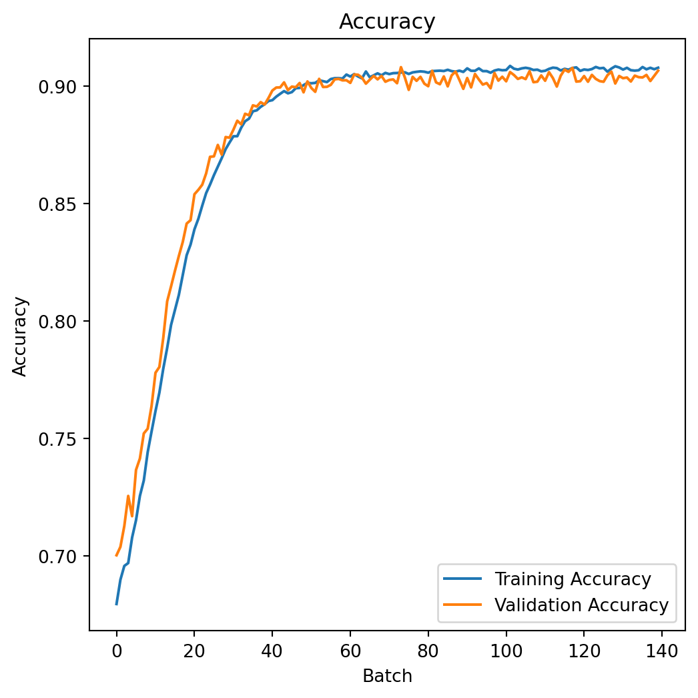

import numpy as np
import pandas as pd
import matplotlib.pyplot as plt
import hvplot.pandas
import seaborn as sns
from sklearn.model_selection import train_test_splitImage source: https://www.freepik.com
Introduction
In this blog, we’re going to solve the House Prices Prediction problem with linear and nonlinear regression models. Regression is one of the most important machine learning (ML) algorithm, it is very straightforward and intuitive. It is usually the first algorithm we encounter in our machine learning journey, so let’s conquer it together!
We’re going to cover the following regression models in this post:
- Linear Models
- Linear Regression
- Ridge Regression
- Lasso Regression
- Elastic Net Regression
- Nonlinear Models
- Polynomial Regression
- Artificial Neural Network
Data
The dataset used in this blog is downloaded from Kaggle USA Housing. The whole dataset is about 5000 rows and 7 columns stored in the csv format, a local downloaded copy could be found as USA_Housing.csv file.
Exploratory Data Analysis
We first conduct some exploratory data analysis. We’re going to use the pandas library to load and process data, and use the matplotlib and seaborn library for data visualizations.
Import Libraries
Load Data
housing_df = pd.read_csv('data/USA_Housing.csv')
housing_df.head()| Avg. Area Income | Avg. Area House Age | Avg. Area Number of Rooms | Avg. Area Number of Bedrooms | Area Population | Price | Address | |
|---|---|---|---|---|---|---|---|
| 0 | 79545.458574 | 5.682861 | 7.009188 | 4.09 | 23086.800503 | 1.059034e+06 | 208 Michael Ferry Apt. 674\nLaurabury, NE 3701... |
| 1 | 79248.642455 | 6.002900 | 6.730821 | 3.09 | 40173.072174 | 1.505891e+06 | 188 Johnson Views Suite 079\nLake Kathleen, CA... |
| 2 | 61287.067179 | 5.865890 | 8.512727 | 5.13 | 36882.159400 | 1.058988e+06 | 9127 Elizabeth Stravenue\nDanieltown, WI 06482... |
| 3 | 63345.240046 | 7.188236 | 5.586729 | 3.26 | 34310.242831 | 1.260617e+06 | USS Barnett\nFPO AP 44820 |
| 4 | 59982.197226 | 5.040555 | 7.839388 | 4.23 | 26354.109472 | 6.309435e+05 | USNS Raymond\nFPO AE 09386 |
As we can see in the Table 1, there are 6 numeric columns represents the average area income, house age, number of rooms, number of bedrooms, area population and price, respectively. There is only 1 textual column, keeps the house address.
Our goal is modeling the house price, so it should be the dependent variable in the regressions, and all the other columns should be treated as the independent variable.
We now have a quick examination of the descriptive statistics.
housing_df.describe()| Avg. Area Income | Avg. Area House Age | Avg. Area Number of Rooms | Avg. Area Number of Bedrooms | Area Population | Price | |
|---|---|---|---|---|---|---|
| count | 5000.000000 | 5000.000000 | 5000.000000 | 5000.000000 | 5000.000000 | 5.000000e+03 |
| mean | 68583.108984 | 5.977222 | 6.987792 | 3.981330 | 36163.516039 | 1.232073e+06 |
| std | 10657.991214 | 0.991456 | 1.005833 | 1.234137 | 9925.650114 | 3.531176e+05 |
| min | 17796.631190 | 2.644304 | 3.236194 | 2.000000 | 172.610686 | 1.593866e+04 |
| 25% | 61480.562388 | 5.322283 | 6.299250 | 3.140000 | 29403.928702 | 9.975771e+05 |
| 50% | 68804.286404 | 5.970429 | 7.002902 | 4.050000 | 36199.406689 | 1.232669e+06 |
| 75% | 75783.338666 | 6.650808 | 7.665871 | 4.490000 | 42861.290769 | 1.471210e+06 |
| max | 107701.748378 | 9.519088 | 10.759588 | 6.500000 | 69621.713378 | 2.469066e+06 |
In order to have better insights on the variables, we further visualize the data distributions as follows.
sns.pairplot(housing_df)
As Table 1 shows, most of our variables are normal distributed, except for the average number of bedrooms, there is clearly some linear trends between the dependent variable Price and other variables.
housing_df.hvplot.hist('Price')
plt.show()We further examine the relations between the dependent variable, for instance, we plot the relationship between Price and Avg. Area Income interactively as below.
housing_df.hvplot.scatter(x='Avg. Area Income', y='Price')
plt.show()Correlation Coefficient
axes_arr = sns.heatmap(
housing_df[[
col for col in housing_df.columns if col not in ["Address","Price"]
]].corr()
)
plt.show()As it is clearly shown in Figure 2, the Avg. Area Income is most correlated with Price, followed by Avg. Area House Age, Area Population, Avg. Area Number of Rooms. The variable Avg. Area Number of Bedrooms has the smallest correlation score at 0.17. Thus, we will include all these variables in the modeling section.
Preprocessing
In order to fully exploit the linear regression, especially for better interpretability, we have to check if our data satisfies some criteria for linear regression application. For example:
Linear Assumption. The linear regression models assume there are linear relationship between the dependent variable and independent variables.
Noise Removal. The noises (i.e., missing value, outliers) in data could potentially impair the model performance, we have to remove these noise before modeling.
Gaussian Distribution. Linear regression works well with data comply with gaussian distribution. For those not, we have to apply data transformation techniques (e.g., log transform, BoxCox) to make the data more gaussian distributed.
Variable Scaling. If variable values are at different magnitudes, we need to scale them to the same magnitudes by using standardization or normalization.
We have already tested the linear assumption and gaussian distribution in the exploratory data analysis section. And the data is relatively clean, noise is not a problem, however, the value of variables are at different magnitude, we will perform re-scaling before modeling steps.
from sklearn.preprocessing import StandardScaler
from sklearn.pipeline import Pipeline
pipeline = Pipeline([
('std_scalar', StandardScaler())
])
X = housing_df[[
col for col in housing_df.columns if col not in ["Address","Price"]
]]
y = housing_df['Price'].to_numpy()
X_scaled = pipeline.fit_transform(X)
pd.DataFrame(X_scaled).describe()| 0 | 1 | 2 | 3 | 4 | |
|---|---|---|---|---|---|
| count | 5.000000e+03 | 5.000000e+03 | 5.000000e+03 | 5.000000e+03 | 5.000000e+03 |
| mean | -2.167155e-17 | 4.263256e-18 | -4.135359e-16 | -2.088996e-16 | -3.041123e-16 |
| std | 1.000100e+00 | 1.000100e+00 | 1.000100e+00 | 1.000100e+00 | 1.000100e+00 |
| min | -4.765584e+00 | -3.361975e+00 | -3.730214e+00 | -1.605598e+00 | -3.626413e+00 |
| 25% | -6.664724e-01 | -6.606490e-01 | -6.846171e-01 | -6.817833e-01 | -6.810902e-01 |
| 50% | 2.075434e-02 | -6.852312e-03 | 1.502401e-02 | 5.564767e-02 | 3.616311e-03 |
| 75% | 6.756386e-01 | 6.794590e-01 | 6.742146e-01 | 4.122077e-01 | 6.748621e-01 |
| max | 3.670725e+00 | 3.572745e+00 | 3.750297e+00 | 2.041039e+00 | 3.371219e+00 |
Data Split
Before the modeling steps, we first the dataset into train, validation and test split. We will use sklearn to perform this task.
X_train, X_test, y_train, y_test = train_test_split(X_scaled, y, test_size=0.2, random_state=666)print(f"The size of train split: {len(X_train)}")
print(f"The size of test split: {len(X_test)}")The size of train split: 4000
The size of test split: 1000Modeling
In this section, we will first introduce the model evaluation metrics and then modeling the data using various of regression algorithms.
Evaluation
There are several popular evaluation metrics which are widely used in regression problem.
RMSE
Root Mean Squared Error (RMSE) is the square root of the mean of the squared errors:
\operatorname{RMSE}= \sqrt{\frac{1}{n}\sum_{i=1}^n(\hat{y_i} - y_i)^2}
where,
x_i = independent variable of each data point
y_i = dependent variable of each data point
\bar{y} = mean of y value
\hat{y_i} = the predict y value base on x
R-Squared (R²) Score
R^2 describes the proportion of dependent variance explained by the regression model1. It could be denoted by the following equation.
\operatorname{R^2} = \frac{SSR}{SST}
where,
SSR = \sum_{i=1}^n \left(\hat{y_i} - \bar{y}\right)^2
\operatorname{SST} = \sum_{i=1}^n \left(y_i - \bar{y}\right)^2
Evaluation using Sklearn
from sklearn import metrics
def print_evaluate(true, predicted):
rmse = np.sqrt(metrics.mean_squared_error(true, predicted))
r2_square = metrics.r2_score(true, predicted)
print('RMSE:', rmse)
print('R2 Square', r2_square)
print('__________________________________')
def evaluate(true, predicted):
rmse = np.sqrt(metrics.mean_squared_error(true, predicted))
r2_square = metrics.r2_score(true, predicted)
return rmse, r2_squareLinear Models
Linear Regression
We now train a linear regression model using sklearn library.
Training
from sklearn.linear_model import LinearRegression
linear_md = LinearRegression()
linear_md.fit(X_train, y_train)LinearRegression()In a Jupyter environment, please rerun this cell to show the HTML representation or trust the notebook.
On GitHub, the HTML representation is unable to render, please try loading this page with nbviewer.org.
LinearRegression()
After the fit, we completed the model train. The next step is verify the fitting result and evaluate the model performance.
Interpreting
We can access the model intercept and coefficients using the sklearn API:
print(f"The intercept is: {linear_md.intercept_}")
coef_df = pd.DataFrame(linear_md.coef_, X.columns, columns=['Coefficient'])
coef_dfThe intercept is: 1232604.4076491522| Coefficient | |
|---|---|
| Avg. Area Income | 230982.846988 |
| Avg. Area House Age | 162799.384625 |
| Avg. Area Number of Rooms | 122310.560876 |
| Avg. Area Number of Bedrooms | 2376.796391 |
| Area Population | 151198.049691 |
Prediction
Predict using the model
pred = linear_md.predict(X_test)
pd.DataFrame({'True Values': y_test, 'Predicted Values': pred}).hvplot.scatter(x='True Values', y='Predicted Values')The residual histogram is plotted as following:
pd.DataFrame({'Error Values': (y_test - pred)}).hvplot.kde()Performance
pred_train = linear_md.predict(X_train)
pred_test = linear_md.predict(X_test)
print(f"The train set performance:\n")
print_evaluate(y_train, pred_train)
print(f"The test set performance:\n")
print_evaluate(y_test, pred_test)The train set performance:
RMSE: 100782.52384490197
R2 Square 0.9178558419818683
__________________________________
The test set performance:
RMSE: 102440.81503100201
R2 Square 0.9184591335733732
__________________________________Ridge Regression
Ridge regression is a type of regularized linear regression, it imposes a penalty on the size of the coefficients, it could be expressed using the equation2:
\min_{w} || X w - y||_2^2 + \alpha ||w||_2^2
The parameter \alpha controls the amount of the penalty, the larger the \alpha, the more penalty is imposed, the coefficient is more shrink to 0.
Similar to linear regression, we do modeling and evaluation using the ridge regression as following:
from sklearn.linear_model import Ridge
ridge_md = Ridge(alpha = 20, solver='cholesky', tol=0.0001, random_state=666)
ridge_md.fit(X_train, y_train)Ridge(alpha=20, random_state=666, solver='cholesky')In a Jupyter environment, please rerun this cell to show the HTML representation or trust the notebook.
On GitHub, the HTML representation is unable to render, please try loading this page with nbviewer.org.
Ridge(alpha=20, random_state=666, solver='cholesky')
pred_train = ridge_md.predict(X_train)
pred_test = ridge_md.predict(X_test)
print(f"The train set performance:\n")
print_evaluate(y_train, pred_train)
print(f"The test set performance:\n")
print_evaluate(y_test, pred_test)The train set performance:
RMSE: 100798.00734362529
R2 Square 0.9178305999732655
__________________________________
The test set performance:
RMSE: 102413.21431785727
R2 Square 0.9185030668996456
__________________________________Lasso Regression
Ridge regression is another type of regularized linear regression, specifically, using L1 regularization. It adds the absolute value of the coefficient to the loss function as the penalty. Mathematically, it could be expressed using the equation3:
\min_{w} { \frac{1}{2n_{\text{samples}}} ||X w - y||_2 ^ 2 + \alpha ||w||_1}
The parameter \alpha is a constant which controls the amount of the penalty, the ||w||_1 is the \ell_1-norm of the coefficients.
Lasso Regression modeling and performance evaluation is performed bellow:
from sklearn.linear_model import Lasso
lasso_md = Lasso(alpha = 0.08, selection='random', positive=True, random_state=888)
lasso_md.fit(X_train, y_train)Lasso(alpha=0.08, positive=True, random_state=888, selection='random')In a Jupyter environment, please rerun this cell to show the HTML representation or trust the notebook.
On GitHub, the HTML representation is unable to render, please try loading this page with nbviewer.org.
Lasso(alpha=0.08, positive=True, random_state=888, selection='random')
pred_train = lasso_md.predict(X_train)
pred_test = lasso_md.predict(X_test)
print(f"The train set performance:\n")
print_evaluate(y_train, pred_train)
print(f"The test set performance:\n")
print_evaluate(y_test, pred_test)The train set performance:
RMSE: 100782.52384504011
R2 Square 0.917855841981643
__________________________________
The test set performance:
RMSE: 102440.81373676285
R2 Square 0.9184591356337508
__________________________________Elastic Net Regression
Elastic net regression is essentially a combination of Ridge and Lasso regression. As it adds two regularization term: L2 and L1 regularization which is used in Ridge and Lasso regression respectively. The trade-off between Ridge and Lasso allows elastic net regression picks up the advantages of these two models. The lost function is written as4:
\min_{w}{\frac{1}{2n_{samples}} \big|\big|X w - y\big|\big|_2 ^ 2 + \alpha \rho \big|\big|w\big|\big|_1 + \frac{\alpha(1-\rho)}{2} \big|\big|w\big|\big|_2 ^ 2}
The parameters alpha \alpha and l1_ratio \rho could be decided by cross-validation.
from sklearn.linear_model import ElasticNet
enet_md = ElasticNet(alpha=0.08, l1_ratio=0.9, selection='random', random_state=666)
enet_md.fit(X_train, y_train)ElasticNet(alpha=0.08, l1_ratio=0.9, random_state=666, selection='random')In a Jupyter environment, please rerun this cell to show the HTML representation or trust the notebook.
On GitHub, the HTML representation is unable to render, please try loading this page with nbviewer.org.
ElasticNet(alpha=0.08, l1_ratio=0.9, random_state=666, selection='random')
pred_train = enet_md.predict(X_train)
pred_test = enet_md.predict(X_test)
print(f"The train set performance:\n")
print_evaluate(y_train, pred_train)
print(f"The test set performance:\n")
print_evaluate(y_test, pred_test)The train set performance:
RMSE: 100821.89673708729
R2 Square 0.9177916466289507
__________________________________
The test set performance:
RMSE: 102411.86137925804
R2 Square 0.9185052201299478
__________________________________Nonlinear Models
All the model introduce above are belong to linear category. However, linear models is not designed to capture nonlinear trends in the data. If the relationship between dependent variable and independent variables are not linear, we have to apply nonlinear models. Among various options, polynomial regression and artificial neural network are the popular ones.
Polynomial Regression
Polynomial regression is a extension to linear regression by introducing polynomial terms. Recall the linear regression model looks like5:
\hat{y}(w, x) = w_0 + w_1 x_1 + w_2 x_2
However, we can add quadratic term to the previous equation to fit a parabola instead of a plane, then it looks like:
\hat{y}(w, x) = w_0 + w_1 x_1 + w_2 x_2 + w_3 x_1 x_2 + w_4 x_1^2 + w_5 x_2^2
We can new image creating a set of features as:
z = [x_1, x_2, x_1 x_2, x_1^2, x_2^2]
Then, we combine the features and coefficients linearly, and get the following:
\hat{y}(w, z) = w_0 + w_1 z_1 + w_2 z_2 + w_3 z_3 + w_4 z_4 + w_5 z_5
Modeling
from sklearn.preprocessing import PolynomialFeatures
poly_md = PolynomialFeatures(degree=2)
X_train_2_d = poly_md.fit_transform(X_train)
X_test_2_d = poly_md.transform(X_test)
linear_reg = LinearRegression()
linear_reg.fit(X_train_2_d, y_train)LinearRegression()In a Jupyter environment, please rerun this cell to show the HTML representation or trust the notebook.
On GitHub, the HTML representation is unable to render, please try loading this page with nbviewer.org.
LinearRegression()
Performance
pred_train = linear_reg.predict(X_train_2_d)
pred_test = linear_reg.predict(X_test_2_d)
print(f"The train set performance:\n")
print_evaluate(y_train, pred_train)
print(f"The test set performance:\n")
print_evaluate(y_test, pred_test)The train set performance:
RMSE: 100640.24459847226
R2 Square 0.9180876115116245
__________________________________
The test set performance:
RMSE: 102720.10827633881
R2 Square 0.918013903645979
__________________________________Artificial Neural Network
Artificial Neural Network is a very powerful model to fit linear and nonlinear data. In this section, we will use pytorch framework to build a artificial neural network to predict the house prices. Similar to previous models, we start from build the network, then train the models and report the performance in the end.
Network Construction
Import the libraries:
import torch
import torch.nn as nn
import torch.nn.functional as F
from torch.utils.data import Dataset, DataLoaderDefine the HousePriceDataset by extending pytorch’s Dataset class, it is simply convert the numpy array to pytorch tensor.
class HousePriceDataset(Dataset):
def __init__(self, X, Y):
self.X = torch.tensor(X, dtype=torch.float32)
self.y = torch.tensor(Y, dtype=torch.float32)
def __len__(self):
return len(self.X)
def __getitem__(self, index):
return (self.X[index], self.y[index])We new create the DataLoader objects, which load the data in batch to feed into the neural network.
train_ds = HousePriceDataset(X_train, y_train)
test_ds = HousePriceDataset(X_test, y_test)
trainloader = DataLoader(train_ds, batch_size=32, shuffle=True,
num_workers=2, drop_last=True)
testloader = DataLoader(test_ds, batch_size=32, shuffle=True, num_workers=2,
drop_last=True)The code below creates the neural network. It consist of several feed-forward layer with dropout regularization and use RELU as activate function. Each layer is like a linear regression, and the activate function map the output into the nonlinear space. That is why neural network could be used as a nonlinear regressor.
class MLP(nn.Module):
def __init__(self):
super(MLP, self).__init__()
self.layers = nn.Sequential(
nn.Linear(5, 64),
nn.Dropout(0.2),
nn.ReLU(),
nn.Linear(64, 128),
nn.Dropout(0.2),
nn.ReLU(),
nn.Linear(128, 64),
nn.Dropout(0.2),
nn.ReLU(),
nn.Linear(64, 1)
)
def forward(self, x):
return self.layers(x)Training
We first implement the evaluate function which loads the test data, pass it to the pre-trained model and reports the MSE and R^2 as performance metrics.
def evaluate(model):
pred_list = []
label_list = []
loss_list = []
loss_function = nn.MSELoss()
model.eval()
for i, data in enumerate(testloader):
# Get inputs
inputs, targets = data
# Perform forward pass
outputs = model(inputs)
outputs = outputs.squeeze(-1)
loss = loss_function(outputs, targets)
loss_list.append(loss.item())
pred_list.append(outputs.detach().numpy())
label_list.append(targets.numpy())
avg_loss = sum(loss_list) / len(testloader)
pred_np = np.vstack(pred_list)
label_np = np.vstack(label_list)
avg_r2 = metrics.r2_score(pred_np, label_np)
return (avg_loss, avg_r2)The then implements the train function to manage the whole training process, it initialize the neural network, data loader, loss function and the optimizer. Data is passed forward in the network and errors are propagated backward in the network.
def train():
mlp = MLP()
torch.manual_seed(666)
trainloader = DataLoader(train_ds, batch_size=32, shuffle=True,
num_workers=2)
loss_function = nn.MSELoss()
optimizer = torch.optim.Adam(mlp.parameters(), lr=6e-4)
n_epochs = 150
mlp.train()
train_loss_list = []
train_r2_list = []
test_loss_list = []
test_r2_list = []
for epoch in range(n_epochs):
pred_list = []
label_list = []
loss_list = []
for i, data in enumerate(trainloader):
inputs, targets = data
# Zero the gradients
optimizer.zero_grad()
# Perform forward pass
outputs = mlp(inputs)
outputs = outputs.squeeze(-1)
# Compute loss
loss = loss_function(outputs, targets)
# Perform backward pass
loss.backward()
# Perform optimizationd
optimizer.step()
# Print statistics
pred_list.append(outputs.detach().numpy())
label_list.append(targets.numpy())
loss_list.append(loss.item())
avg_loss = sum(loss_list) / len(trainloader)
pred_np = np.vstack(pred_list)
label_np = np.vstack(label_list)
avg_r2 = metrics.r2_score(pred_np, label_np)
train_loss_list.append(avg_loss)
train_r2_list.append(avg_r2)
test_loss, test_r2 = evaluate(mlp)
test_loss_list.append(test_loss)
test_r2_list.append(test_r2)
print(f"epoch: {epoch}, test_loss: {test_loss}, test_r2: {test_r2}")
print('Training process has finished.')
return mlp, train_loss_list, train_r2_list, test_loss_list, test_r2_listStart the training process:
model, train_loss_list, train_r2_list, test_loss_list, test_r2_list = train()Evaluation
Similar to previous model, we reports the RMSE and R^2 of the test set as the evaluation metrics:
test_loss, test_r2 = evaluate(model)
print(f"The test set performance:\n")
rmse = np.sqrt(test_loss)
print('RMSE:', rmse)
print('R2 Square', test_r2)
print('__________________________________')The test set performance:
RMSE: 102623.80293089902
R2 Square 0.9047423651342836
__________________________________train_loss = train_loss_list
val_loss = test_loss_list
train_r2 = train_r2_list
val_r2 = test_r2_listFurther, we can visualize the the RMSE of the train and test split during the whole training process, which is shown as follows:
# Draw loss plot
import matplotlib.pyplot as plt
plt.figure(figsize = (6,6))
plt.plot(train_loss, label='Training Loss')
plt.plot(val_loss, label='Validation Loss')
plt.xlabel('Batch')
plt.ylabel('Loss')
plt.legend()
plt.title('Loss')
plt.show()The R^2 of the train and test split during the whole training process is shown as follows:
# Draw accuracy plot
plt.figure(figsize = (6,6))
plt.plot(train_r2[10:], label='Training Accuracy')
plt.plot(val_r2[10:], label='Validation Accuracy')
plt.xlabel('Batch')
plt.ylabel('Accuracy')
plt.legend()
plt.title('Accuracy')
plt.show()
Discussion and Conclusion
In this blog, we applied 4 linear regression models and 2 nonlinear regression models in predicting the house price. Although trained on the same training set, these models vary in performance and have different characteristics in training.
Linear or nonlinear regression should I use? The choice between linear regression and nonlinear regression depends on the underlying relationship between the independent and dependent variables in your dataset. Here are some guidelines can be summarized from our previous experiments:
Linearity of the Relationship:
Use linear regression when the relationship between the independent and dependent variables appears to be linear. Linear regression models assume a straight-line relationship, and they are suitable when the data points seem to follow a linear pattern.
Use nonlinear regression when the relationship is not linear. If the data exhibits a curve, exponential growth, decay, or any other nonlinear pattern, a nonlinear regression model may be more appropriate.
Model Complexity:
Linear regression models are simpler and easier to interpret. If a linear relationship adequately describes the data, it’s often preferable due to its simplicity.
Nonlinear regression models can capture more complex relationships but may be harder to interpret. Be cautious about overfitting, where a model captures noise in the data rather than the underlying pattern.
As the house price data we used has a simple linear pattern, so, the performance is has no big difference than the nonlinear models. But it is much simple to implement and requires much less time and resource for training. In this kind of scenario, linear regression could be a good choice.
In summary, the decision to use linear or nonlinear regression depends on the characteristics of your data and the underlying relationship between variables.
Footnotes
https://en.wikipedia.org/wiki/Coefficient_of_determination↩︎
https://scikit-learn.org/stable/modules/linear_model.html#ridge-regression↩︎
https://scikit-learn.org/stable/modules/generated/sklearn.linear_model.Lasso.html#sklearn.linear_model.Lasso↩︎
https://scikit-learn.org/stable/modules/generated/sklearn.linear_model.ElasticNet.html#sklearn.linear_model.ElasticNet↩︎
https://scikit-learn.org/stable/modules/linear_model.html#polynomial-regression-extending-linear-models-with-basis-functions↩︎